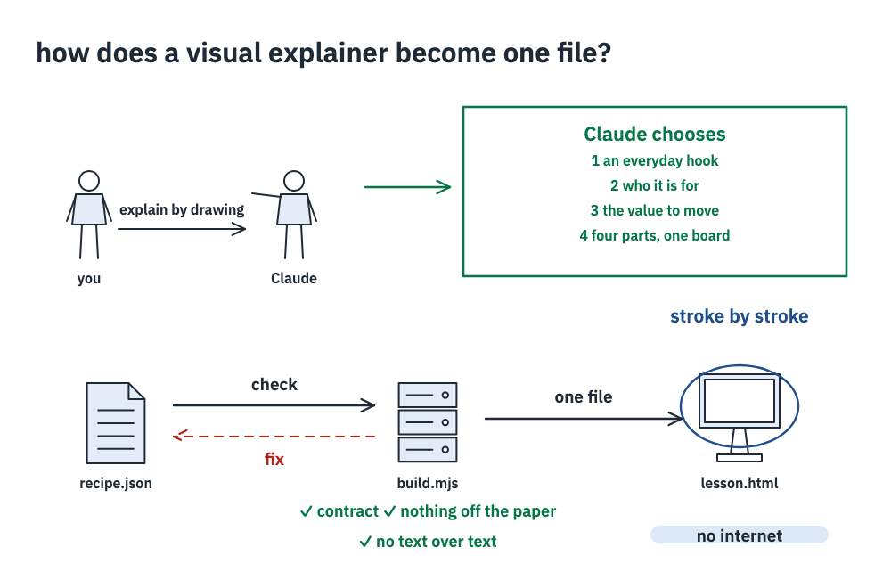
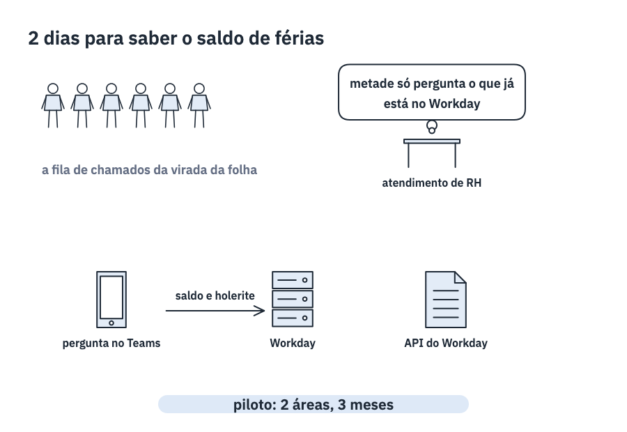
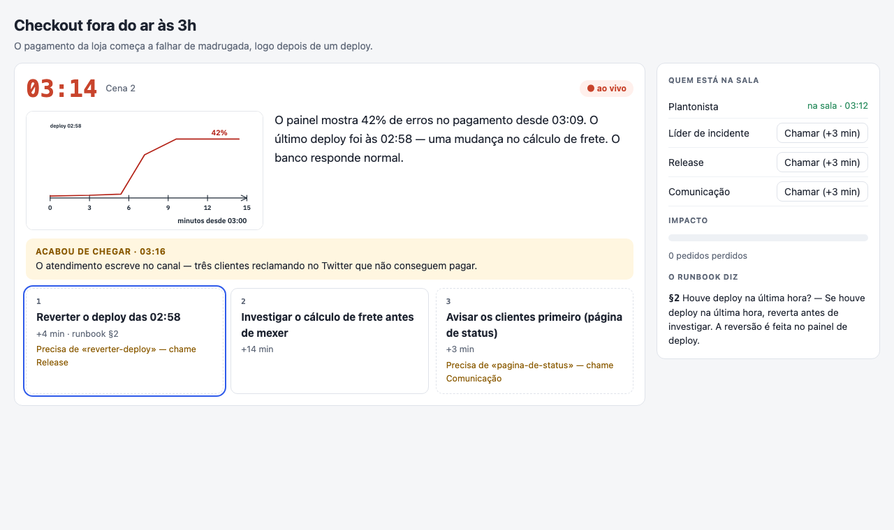
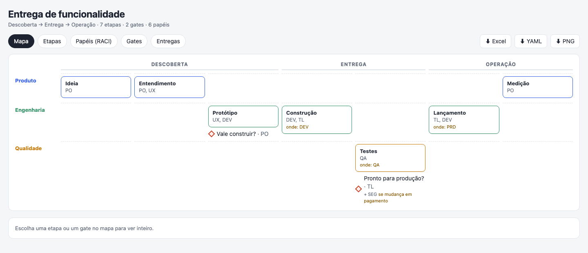
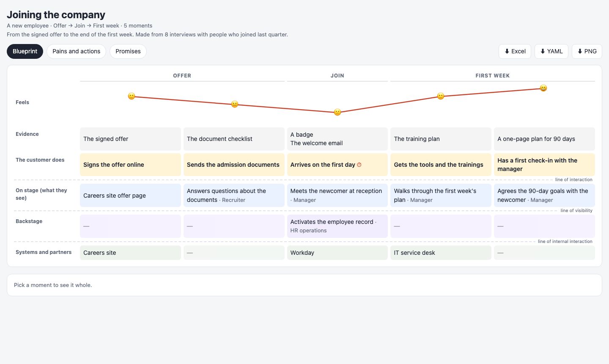
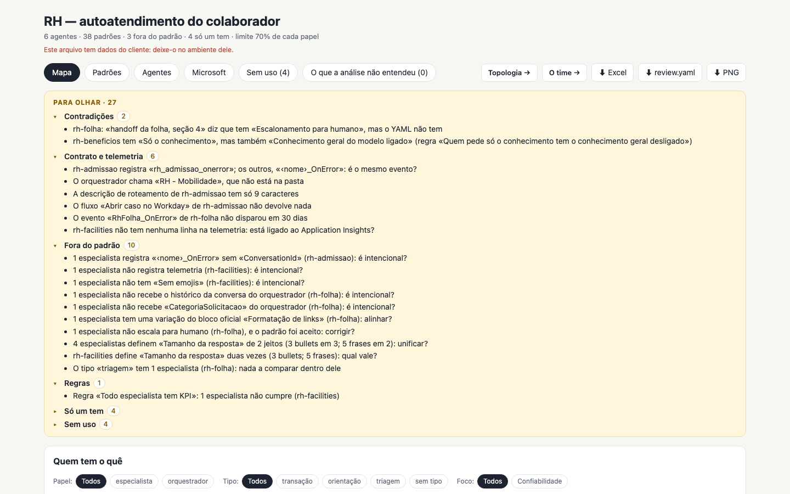
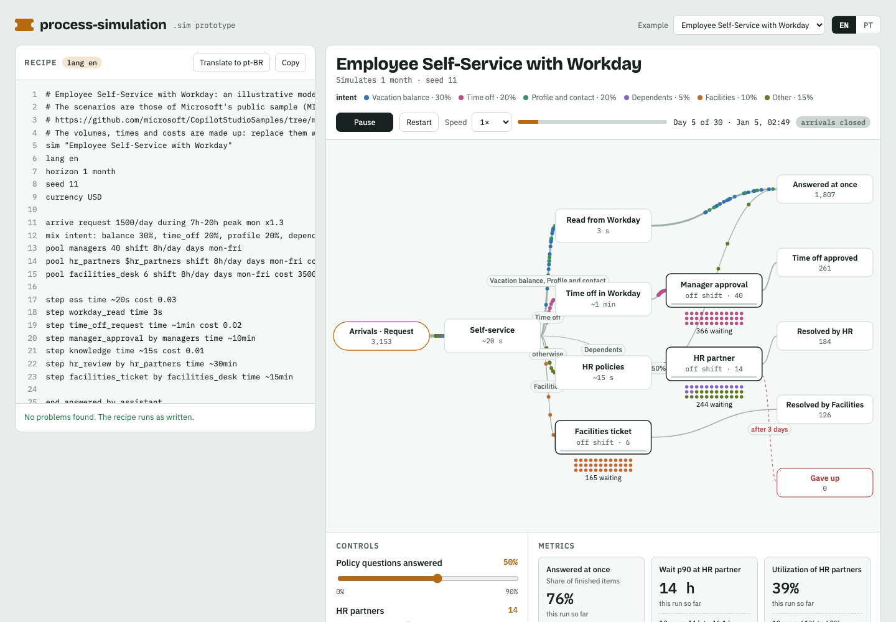

DNA
A process, written as files you can check: the way of working, the journey, the drill, the simulation, the agents compared and the solution that puts them together — each one an HTML file that opens offline. Eight Agent Skills for Claude.

Explain an idea by drawing it An explainer that draws itself chapter by chapter, with narration and the values to move — clean enough for a meeting room.
Present the idea A pitch, an architecture, a decision, data, a timeline or a story, drawn to be shown — it opens presenting, and becomes a PowerPoint.
Rehearse the incident A runbook becomes a drill to play, with a clock and choices, and a debrief of what the runbook does not say.
Map how the team works Stages, gates and who approves them, roles and outputs: one checkable file, a map, a workbook and an explainer.
Map what the customer lives Each moment of a journey, how it feels, and who makes it happen on stage, backstage and in the systems.
Compare the agents Copilot Studio agents side by side: what repeats, who is off the pattern, what the orchestrator passes on, which events fire, what nobody uses — with the file behind each.
Ask «what if» of a process What arrives, who handles it, what it costs: a short recipe becomes a simulation to watch, with a slider for every control and the scenarios side by side. Put the whole process together
One solution, every piece in one page: the way of working, the simulation, the journey, the drill and the agents — and accelerators to start from.
Put the whole process together
One solution, every piece in one page: the way of working, the simulation, the journey, the drill and the agents — and accelerators to start from.
workday-integration
For whoever designs a Workday integration: a catalog of the Workday Web Services (SOAP) on your machine. It hands the agent what the WSDLs say — the operations that match, what is around one, its fields, which operations carry a field — so it does not read WSDL or XSD, and decides itself; then writes the SOAP envelope, the spec of the Copilot Studio Workday connector's «Execute SOAP operation» (typed inputs, Power Fx, what to read back) and a template of Microsoft's Employee Self-Service Workday pack. As a skill and as an MCP server.
It reads the Operation Directory and the WSDLs from Workday Community or your files, and calls no tenant: no credential, nothing of a person in what it writes. Not affiliated with Workday.
/plugin install workday-integration@dna npx @ruinosus/workday-integration search "time off" node scripts/wws.mjs fetch --services hr node scripts/wws.mjs search "request flexible work arrangement" node scripts/wws.mjs related Add_Flexible_Work_Arrangement node scripts/wws.mjs copilot Approve_Business_Process node scripts/wws.mjs ess Approve_Business_Process
Install
In Claude Code, all eight at once:
/plugin marketplace add ruinosus/dna /plugin install dna@dna
In claude.ai, upload each skill's zip from the latest release (Settings › Capabilities › Skills, code execution on). In VS Code with GitHub Copilot: Chat: Add Plugin Marketplace › ruinosus/dna, then install it from Agent Customizations › Browse. Outside both: npx @ruinosus/dna <skill> <file>.